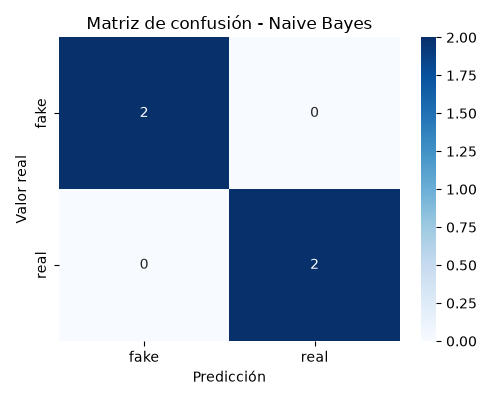

Un medio de comunicación necesita un sistema automático que determine si una noticia es real o falsa a partir de su contenido textual. Se propone resolver esta tarea con un clasificador Naive Bayes Multinomial entrenado sobre un corpus pequeño de titulares etiquetados manualmente.
El corpus está compuesto por 10 titulares, 5 etiquetados como real y 5 como fake:
| Titular | Etiqueta |
|---|---|
| El presidente anunció una nueva reforma educativa | real |
| Descubren que la vacuna convierte a las personas en robots | fake |
| La NASA confirma el hallazgo de agua en Marte | real |
| Científicos afirman que la Tierra es plana | fake |
| El ministerio de salud lanza campaña contra el dengue | real |
| Celebridades usan crema milagrosa para rejuvenecer 30 años | fake |
| Se inaugura el nuevo hospital en la ciudad | real |
| Estudio revela que comer chocolate cura el cáncer | fake |
| Gobierno aprueba ley de protección ambiental | real |
| Investigadores aseguran que los teléfonos espían nuestros sueños | fake |
CountVectorizer.MultinomialNB.train_test_split(test_size=0.4, random_state=42).vectorizador = CountVectorizer() X_train_vec = vectorizador.fit_transform(X_train) modelo = MultinomialNB() modelo.fit(X_train_vec, y_train)
| Métrica | Valor |
|---|---|
| Accuracy en el conjunto de prueba | 0.75 |
| Accuracy media en validación cruzada (5 folds) | 0.80 |
| Desviación estándar entre folds | 0.245 |
precision recall f1-score support
fake 0.67 1.00 0.80 2
real 1.00 0.50 0.67 2
accuracy 0.75 4
macro avg 0.83 0.75 0.74 4
weighted avg 0.83 0.75 0.74 4
| Predicho: fake | Predicho: real | |
|---|---|---|
| Real: fake | 2 | 0 |
| Real: real | 1 | 1 |

| Noticia | Predicción |
|---|---|
| Nuevo estudio demuestra que el café mejora la memoria | fake |
| Expertos afirman que los gatos pueden hablar con humanos | fake |
El modelo funciona como línea base: clasifica correctamente la mayoría del conjunto de prueba y responde con coherencia frente a noticias nuevas. Sin embargo, el tamaño reducido del corpus y la sensibilidad a palabras clave limitan su confiabilidad en un escenario real.
Mejoras propuestas:
TfidfVectorizer en lugar de conteo simple.